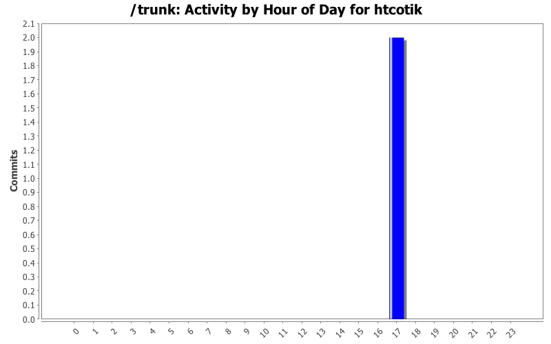
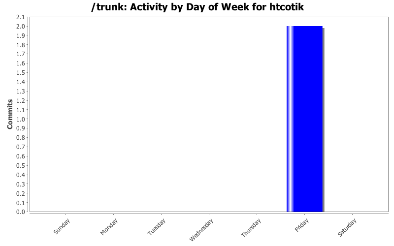

| Directory | Changes | Lines of Code | Lines per Change |
|---|---|---|---|
| src/TortoiseMerge/ | 2 (100.0%) | 0 (-) | 0.0 |
Don't remember Screen lines while getting scrollbar state is not successful
Fixes - first click on locatorbar after start left view lines out of sync
0 lines of code changed in 2 files: